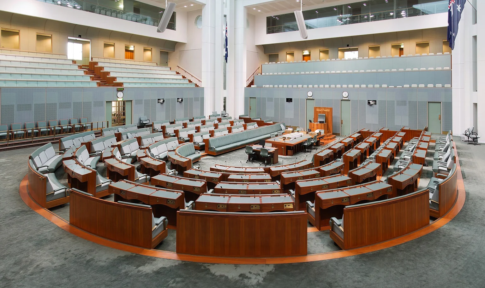

Exploring a civic establishment
Read. Learn.
Keep the credit.
The full Strange But True Public Source Licence, with separate rights for photographs and other third-party material.
System in development · Brisbane · 8 November 2026
The House of Representatives chamber, Parliament House, Canberra, on 22 January 2012.
Image credit ↗Original work and third-party rights
Strange But True Public Source Licence.
Strange But True Public Source Licence
Copyright (c) 2026 Luke Nathan Hayes / Strange But True / Aura of Intelligence. All rights reserved except as allowed below.
This is a plain-language licence for aura-civic-establishment.
This is not an open-source licence. It is a public source licence: people can read, learn from and use the work personally, but commercial and corporate rights stay with Luke Nathan Hayes.
1. What You Can Do
You may view, share, clone, study, reference and adapt this repo for personal, educational, artistic, research, community or other non-commercial use.
You may use a personal AI assistant to help read, explain or adapt the repo for those allowed non-commercial uses.
If you use or adapt the work, give clear credit:
Based on aura-civic-establishment by Luke Nathan Hayes / Strange But True / Aura of Intelligence. Original project: https://github.com/auraofintelligence/aura-civic-establishment Used under the Strange But True Public Source Licence.
2. What You Cannot Do Without Permission
You may not use this repo, its code, ideas, text, designs, workflows, data structures, assets, names or close derivatives for commercial, corporate, institutional, government, startup, agency, client or employer purposes without written permission from Luke Nathan Hayes.
That means you may not:
- sell, monetise, repackage, licence, sponsor, advertise with or commercially distribute the work;
- use it in paid products, SaaS tools, client work, consulting, courses, workshops, dashboards, templates or commercial infrastructure;
- use it inside a company, agency, startup, institution, government body or funded commercial project;
- use it for commercial AI training, datasets, embeddings, knowledge bases, agents, model products or evaluation systems;
- remove attribution or present the work as your own;
- use Strange But True, Aura of Intelligence, Luke Nathan Hayes, project names, screenshots, music, writing, images or brand material to imply endorsement, partnership or approval.
3. Commercial Rights
All commercial rights are reserved to Luke Nathan Hayes.
Commercial use requires written permission from Luke Nathan Hayes. Permission can be granted, denied, limited, priced or handled under a separate agreement.
4. Your Own Outputs
If this repo lets you create your own notes, Markdown files, exports, maps, profiles, plans or other personal outputs, those outputs belong to you.
You are responsible for what you put into the tool, what you export, and where you share it.
5. Third-Party Material
This licence only covers original material created by Luke Nathan Hayes / Strange But True / Aura of Intelligence.
Third-party libraries, fonts, APIs, platforms, services or embedded material keep their own licences.
6. No Harmful Or Misleading Use
You may not use this repo or its material for deceptive, exploitative, aggressive, hateful, harassing, unsafe or harmful purposes.
You may not use it to mislead people about privacy, security, law, finance, health, public safety, governance, crypto, AI capability or current events.
7. No Warranty
This repo is provided as-is.
Luke Nathan Hayes / Strange But True / Aura of Intelligence make no warranties and accept no liability for how you use, adapt, interpret, deploy or rely on this material.
Public prototypes are not finished legal, medical, financial, privacy, security, public-safety, governance, crypto, AI-governance or production infrastructure unless Luke Nathan Hayes explicitly says so in writing.